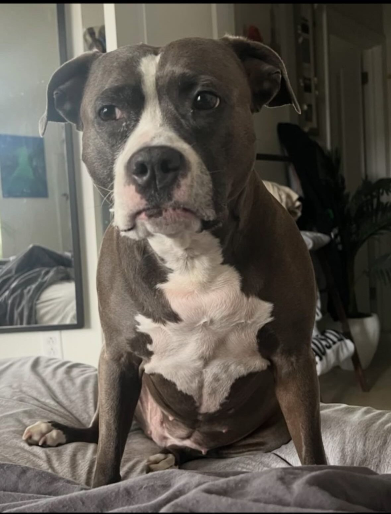
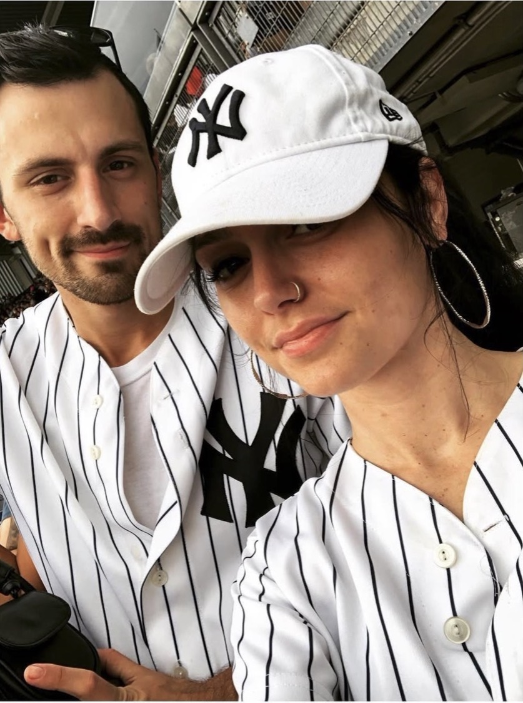

The Love Life of Vanessa and Daniel
Vanessa and Daniel’s love story has grown beautifully over the years, filled with laughter, adventure, and the little moments that make life special. Through every chapter of their journey, they’ve built a home full of warmth, kindness, and plenty of inside jokes. Along the way, their family grew with the arrival of their beautiful daughter — Zara, their beloved dog — who quickly became the heart of the household. Whether she’s stealing the spotlight, demanding attention, or simply being the adorable companion they both adore, Zara is a perfect reminder that their love has created a happy little family together.


Zara is not just a dog — she’s the heart and soul of Vanessa and Daniel’s home. This sweet, loyal pitbull brings endless joy, unconditional love, and plenty of laughter to their lives every single day. From her happy wiggles to her big, loving eyes, Zara has a way of making every moment brighter and every day feel a little more special. She’s more than a pet — she’s family, a constant companion, and a reminder that love comes in all shapes, sizes, and wagging tails. Life with Zara is full of warmth, cuddles, and adventures, and their bond is truly unbreakable.